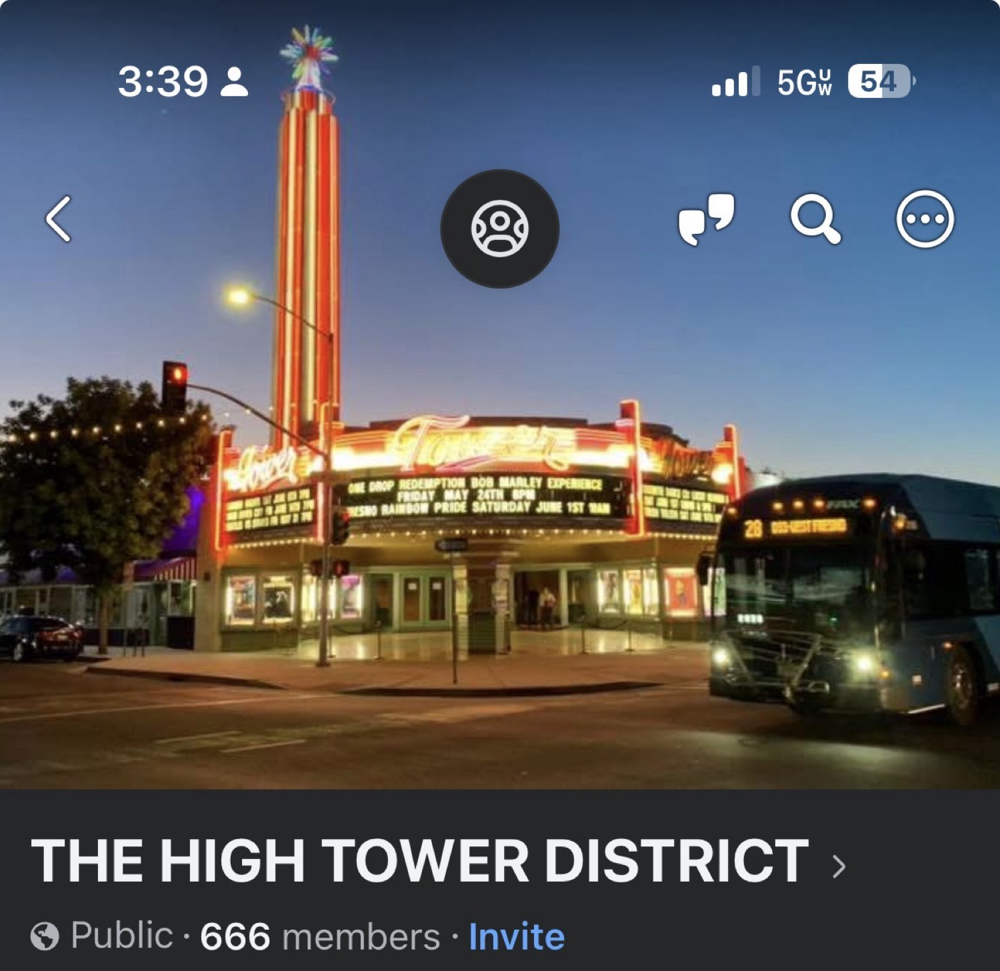
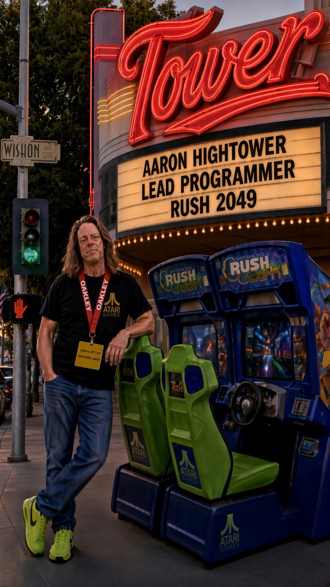
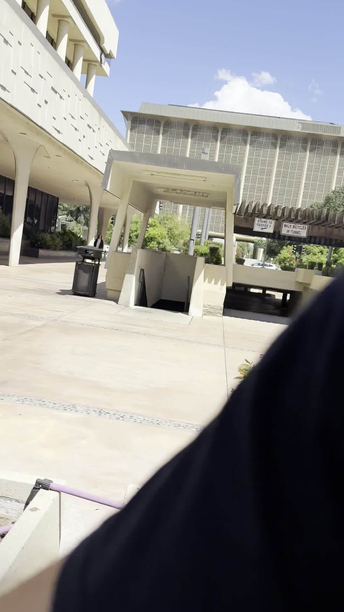
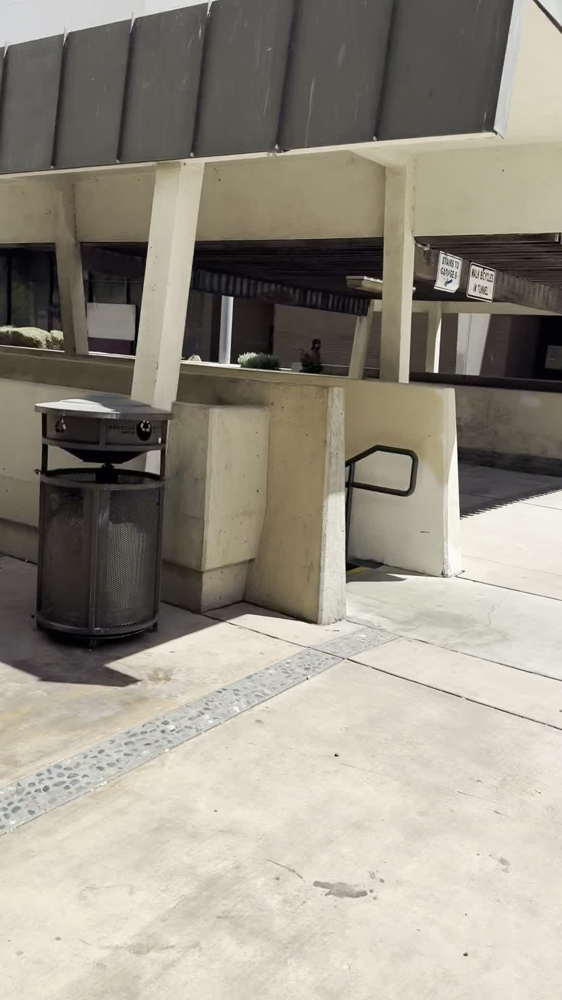
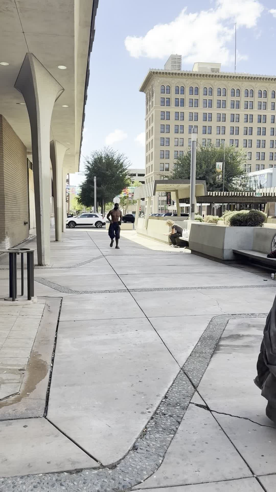
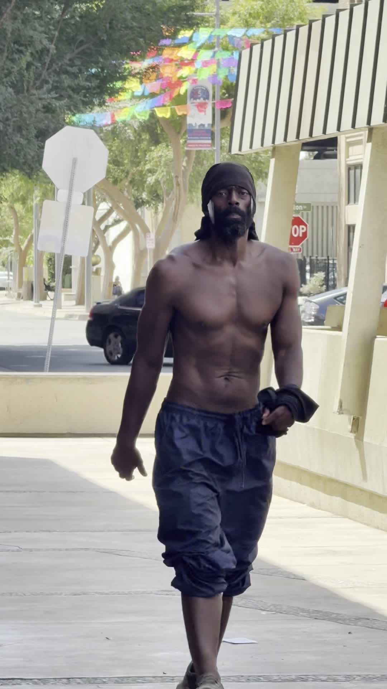

The only programmed sadism
San Francisco Rush 2049 sit-down cabinets carry a numeric keypad. Most of the mid-race codes are toys. Faster. Slippery. Moon gravity. Tank mass. Jupiter. They void Fast Times. They do not steal the other man's race.
Two codes are different.
8675309# is Jenny. Tommy Tutone. It ends the session. Credits do not come back. It is a cheat quit. Clean, cruel, and over.
666# is the other one. Hit it while your friend is driving and the entire track mirrors. Left becomes right. The line he spent a coin building is now a lie. He is still in the seat. He has not crashed. The world just flipped under his hands.
That is the only sadistic thing Atari put in the cabinet besides Jenny. Not gore. Not a kill screen. Just the quiet decision to invert another man's map while he is still responsible for the wheel.

What sadism actually is
Sadism is not a Halloween word. It is pleasure taken in another person's loss of orientation. The man in the next seat did not consent to a mirrored world. The code does not ask. It just writes the new gravity and lets him eat it.
Evil in the street works the same way. It does not need a manifesto. It needs an unarmed target and an audience that can be told the camera is the problem.
California Penal Code 415 is disturbing the peace. Fighting, challenging to fight, or using offensive words likely to provoke a violent reaction in a public place. It is not a license. It is the name of the noise before the battery.
Fulton to Van Ness
The man walked from Fulton toward Van Ness, courthouse park ahead, Mariposa if the street still punched through instead of dying in the parking lot. On the southeast corner of Mariposa and Fulton he spoke toward five Spanish-speaking people. Then he kept going northeast.
He made physical contact with a homeless man known in this neighborhood as kind and generous. That is battery. That is not a debate. Johnny saw the whole sequence.
Only after the hit did the camera come out. Identity for police. Public sidewalk. Courthouse plaza. Daylight. No expectation of privacy on a city walk when you have already put hands on another human being.


"You cannot record me"
After the assault he approached the camera. He said recording him was against the law. That statement is false in this setting. California is a two-party state for confidential communications. A man shouting on a public sidewalk after battering someone is not in a confidential communication. Film of a public event, in public, after a crime, is not the crime.
He made threatening law talk that was not the law. A friend on scene advised that one or two knives were stored in the headband as he closed distance. That is not a First Amendment accessory. That is a reason the second video exists.


The loaded question
The video of the man claiming he could not be recorded went into the group. One member asked whether the administrator was "antagonizing" people.
That is a loaded question. It smuggles the verdict inside the interrogative. It is also an ad hominem. It leaves the battered man on the concrete and turns the lens on the person who documented the batterer.
The move is ancient. Flip the map. Make the reporter the subject. Make the predator the aggrieved party. 666# for civic life.
She was suspended twelve hours and told to read the rules.
What the group actually is
Promote bands, bikes, eateries, and partying. Announce bands at Tower venues. Karaoke. Affordable food. Walkable neighborhood. Safe space for artists.
RULES
- NO criminal culture. That line is not decoration.
- One admin. RESPECT.
- Business promos: creative work tied to Tower, your Tower band, your band at a Tower bar, your bar in Tower, your legal dispensary in Tower.
- Admin reserves the right to remove anything.
- NO WHINING.
Respect is not a suggestion
Character assassination of the administrator after he reports a sadistic public predator is not discussion. It is the mirrored track. The kind man on the ground is erased. The knives in the headband become a rumor you are not supposed to mention. The camera becomes the sin.
Everyone in this group needs the same sentence in plain English. I demand respect. I deserve respect. I will settle for no less than the respect that is owed. Johnny was there. The clips exist. The rules were posted before the walk.
This is not a request for applause. It is a boundary. Criminal culture does not get a seat. Loaded questions that try to put the victim's witness on trial do not get a seat. If you cannot hold that line, you are in the wrong room.
Closing
In the cabinet, 666# is a joke you play once. You watch your friend correct in a panic and you put the track back. In the street there is no pound key that restores the man who just got hit.
Document the predator. Name the fallacy when someone tries to flip the map. Keep the group clean. That is the work.
Within the Lord Jesus Christ. Amen.
Sources and notes
- Arcade keypad reference: 666# mirrors the track mid-race. 8675309# (Jenny) ends the session without refund. Documented on sfrush.org Keypad Codes and period Rush 2049 code lists.
- California Penal Code 415: disturbing the peace.
- Recording: public sidewalk after an observed battery. Confidential-communication rules do not convert a public assault into a privacy shield.
- Witness: Johnny, present for the full sequence.
- The assailant's name is withheld in this page by design. Identity material was captured for police, not for a comment-section hunt.
- Stills from two clips recorded 4 September 2026 near the downtown courthouse plaza, Fresno.